← Índice de los 69 tutes de IDA
Tute 55 · Otro ejercicio de kernel
se conecta con: Fuera de alcance
INTRODUCCION AL REVERSING CON IDA PRO DESDE CERO PARTE 55 KERNEL.
OTRO EJERCICIO KERNEL
Vamos a ver el siguiente ejemplo, pero como en este caso vamos a modificar un valor desde kernel, debemos ver bien que hacemos sino provocaremos una pantalla azul.
Lo primero que haremos sera cargar el ejercicio anterior y debuggearlo con windbg para ver un valor que es necesario para este ejemplo.
Porque no digo el valor es tal, porque este offset cambia entre sistema y sistema, a pesar de que avise de que estoy usando Windows 7 de 32 bits como target por ahora, conviene chequearlo de paso aprendemos mas sobre las estructuras que se manejan.
Como vimos en la parte anterior arrancamos el target con el windbg debuggeando el kernel remoto como se explica alli, y cuando arranca el sistema, con el OSRLOADER arrancamos el driver, luego breakeamos en el windbg y como vimos cambiamos al proceso OSRLOADER con
.process /i xxxxxxx
, poniendo el numero al lado del nombre del proceso.
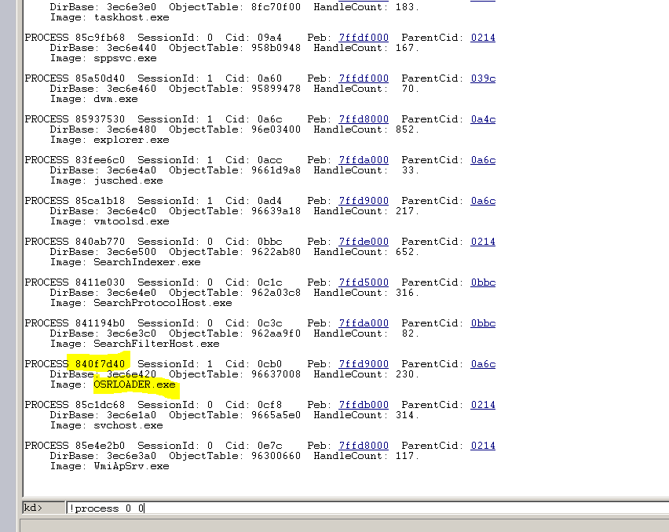
En mi caso
.process /i 840f7d40
Y luego G.
Bueno ese famoso numerito que nunca dijimos el nombre, es la dirección de la estructura _EPROCESS en mi caso 840f7d40 .
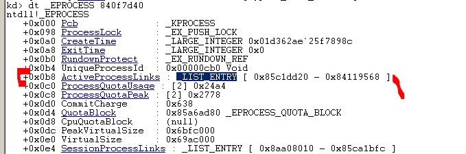
Si dumpeo la estructura en mi caso usare.
_EPROCESS
dt _EPROCESS 840f7d40
Veo que en mi caso en 0xB8 esta la estructura ActiveProcessLinks que es la que estoy buscando, este offset varia de sistema en sistema, en XP esta en 0x88 y en otros sistemas variara también de posición por lo cual esta bueno chequear su valor en nuestra maquina target.
La estructuras del tipo _LIST_ENTRY como esta, en 32 bits tienen 8 bytes de largo, y están compuestas de dos punteros.
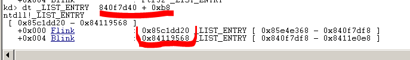
Usando dd se puede ver también.
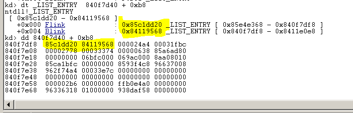
Que alli en el offset 0xb8 esta el primer puntero que es Flink cuyo valor en mi caso 0x85c1dd20 y el Blink que vale en mi caso 0x84119568.
Esos son los dos campos de la misma estructura ActiveProcessLink y apuntan a la misma estructura en el siguiente y el anterior proceso, como sabemos que esa estructura en nuestro sistema esta en el offset 0xb8, podemos hallar el EPROCESS del proceso anterior al mio y del siguiente al mio, restandole a ambos valores 0xb8.
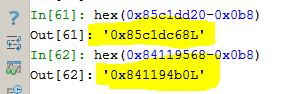
Si vemos los EPROCESS de los otros procesos con !process 0 0
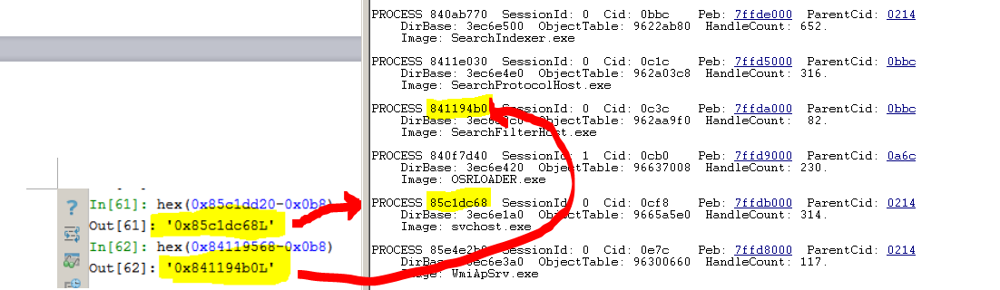

Vemos que nos da el EPROCESS del proceso siguiente y el anterior al OSRLOADER.
Por lo tanto FLINK que es FORWARD LINK apunta a la misma estructura ActiveProcessLink del siguiente proceso y BLINK que es BACKWARD LINK apunta a la misma estructura del anterior proceso de la lista y en mi sistema el OFFSET a ActiveProcessLink es 0xb8.
Bueno esto es por ahora lo que necesitamos saber para entender el funcionamiento del próximo driver que compilaremos.
Como siempre adjuntare el código fuente, pero esencialmente al driver anterior le agregamos una función que se llama HideCaller ya estudiaremos que hace, lo compilo en modo release y lo copio junto con los símbolos a una carpeta para abrirlo con IDA.
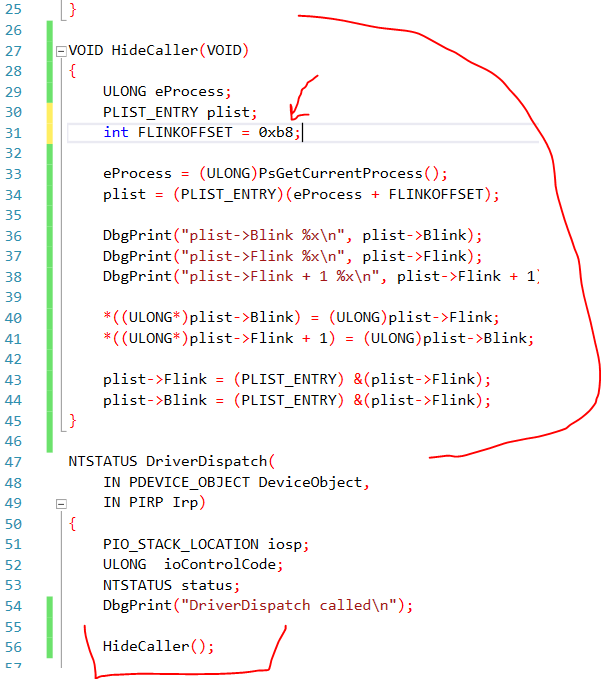
Vemos que la agregamos una función llamada HideCaller, si lo abrimos en IDA con sus simbolos, vemos dentro del DriverDispatch una llamada a HideCaller.
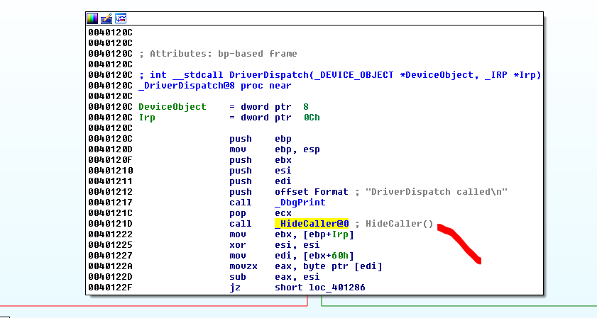
Vemos que es una rutina sencilla
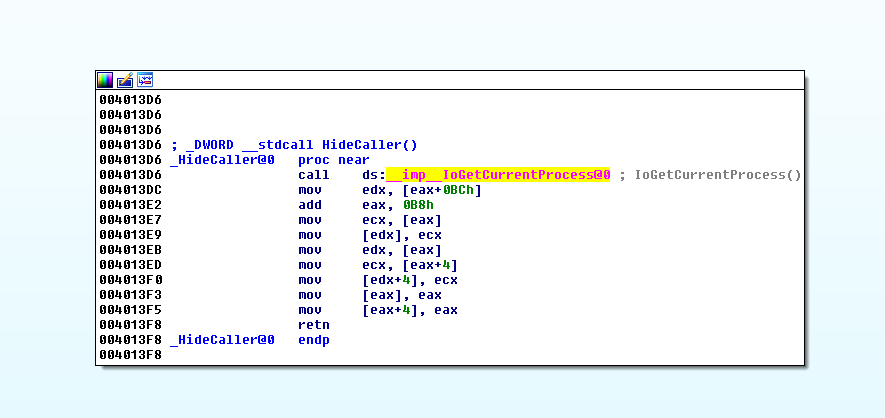
La función IoGetCurrentProcess devuelve un puntero al EPROCESS de nuestro proceso.
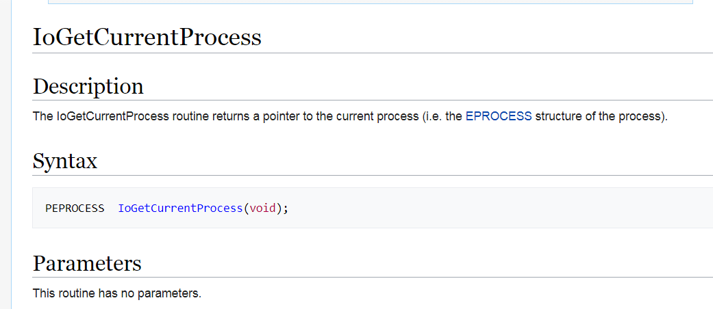
Bueno la estructura eprocess no la tenemos en IDA hay que agregarla a mano pero con lo que ya vimos en el windbg podemos crear una estructura vacía de largo 0x300 que nos sobra.
Vemos que cree una estructura vacía con el método que mostramos anteriormente en el curso.
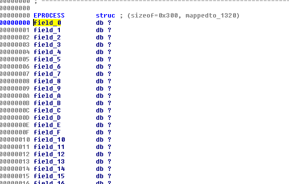
Sabíamos que en el offset 0xb8 empezaba la estructura de 8 bytes ActiveProcessLink asi que vamos allí en la pestaña estructuras y la agregamos.
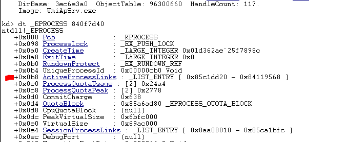
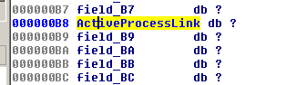
Allí es un DWORD veremos de cambiarla ya que es del tipo _LIST_ENTRY.
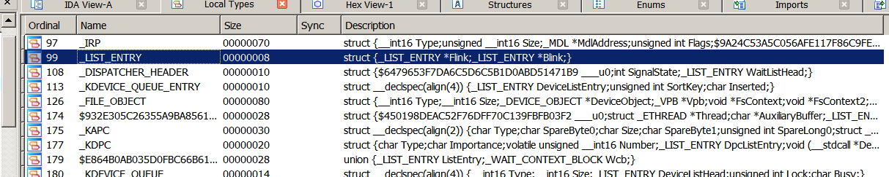
Sincronizamos _LIST_ENTRY y entonces volvemos a la estructura y nos posicionamos en el campo y apretamos ALT más Q para cambiar ese campo al tipo estructura y elegimos la estructura LIST_ENTRY que es de 8 bytes.
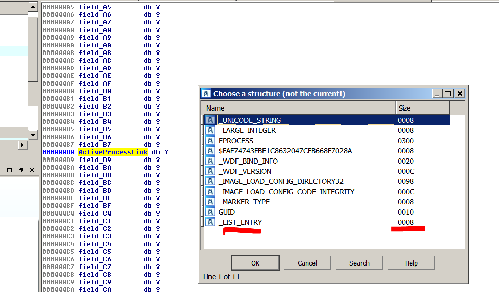
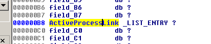
Ahora quedo mas lindo jeje.
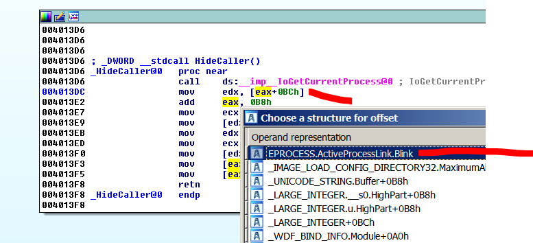
Ahora apretando T vemos que ese campo es el BLINK ya que esta en 0xBC.
El método es pisar el FLINK del proceso anterior para que deje de apuntar a mi proceso y lo saltee en la lista apuntando al próximo, y lo mismo el BLINK del próximo en vez de apuntar a mi proceso que lo haga al anterior al mío, de esa forma cuando vaya recorriendo la lista salteara el mío.
HIDING A PROCESS
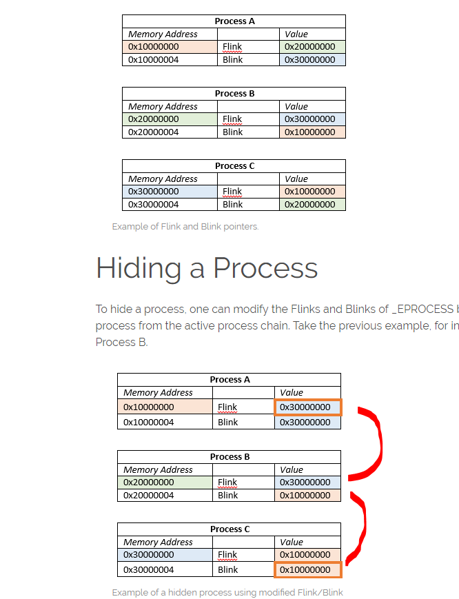
En este ejemplo vemos que al FLINK del proceso anterior que apuntaba a 0x20000000 lo pisamos con 0x30000000 y al BLINK del proceso siguiente que apuntaba a 0x20000000 lo pisare con 0x10000000.
De esta forma ni el anterior ni el siguiente al mío tendrán punteros a mi proceso, lo saltearan al recorrer la lista.
EAX apunta a la estructura ActiceProcessLink y es del tipo _LIST_ENTRY podemos donde hay EAX + XXX apretar T y elegir la estructura LIST_ENTRY para que muestre su campo.
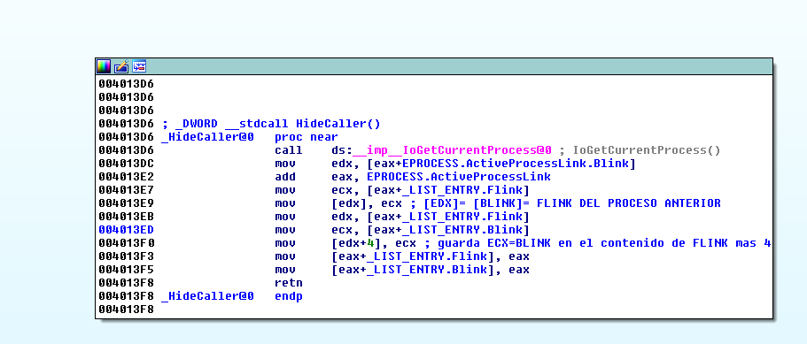
A EAX que tenía el eprocess le suma 0xB8
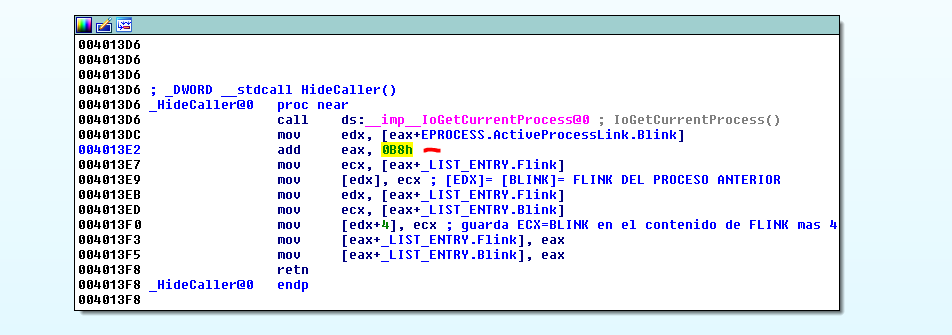
El contenido (mi FLINK) lo mueve a ECX luego lo guarda en el contenido de EDX que tenía mi BLINK, como apunta al proceso anterior, su contenido es el FLINK del proceso anterior así que hace lo que dice el método anterior, pisar el FLINK del proceso anterior con mi FLINK.
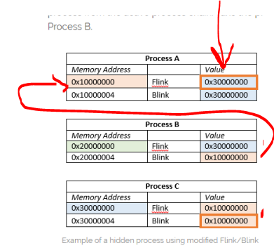
Luego viene el otro puntero que es escribir en FLINK +4 (ya que mi FLINK es 0x30000000 mas 4 da el BLINK del siguiente proceso 0x30000004 y al pisar su contenido machacaremos el valor que tenía con 0x10000000 que es mi BLINK.
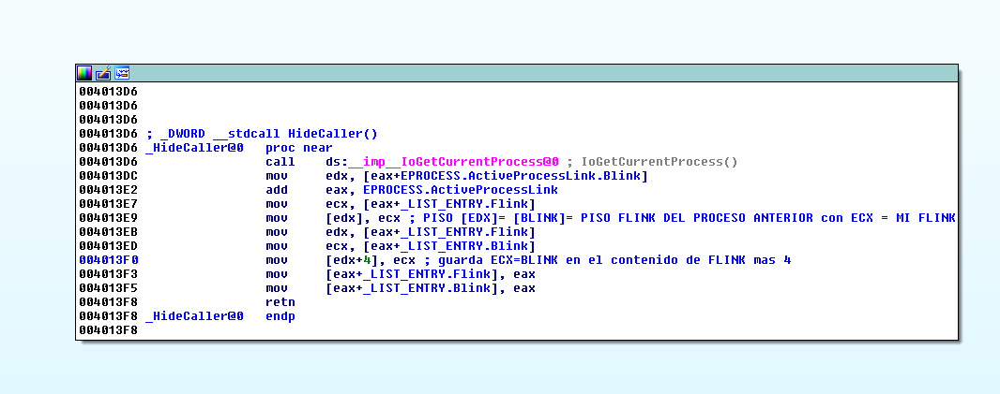
Allí lo hace guarda BLINK de mi proceso en el contenido de FLINK más 4 o sea en el contenido de 0x30000004 machaca el valor que había allí en BLINK del siguiente con 0x10000000.
Lo último es que EAX que tiene la dirección de la estructura ActiveProcessLink, en su contenido esta mi FLINK lo pisa con esa misma dirección y lo mismo con mi BLINK, ahora lo debuggearemos para aclarar un poco.
Pongo un BREAKPOINT allí
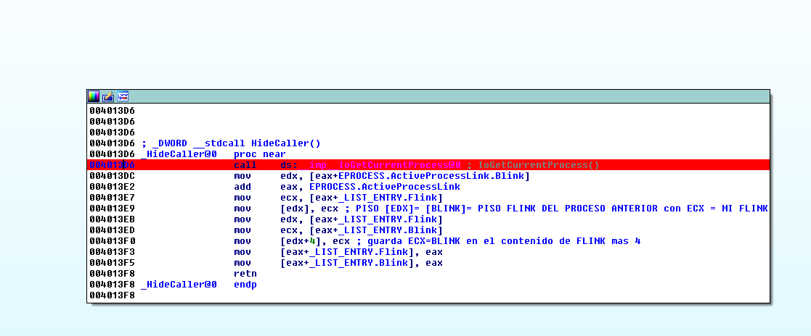
Reinicio la maquina copio el nuevo driver y atacheo el windbg, luego cuando ya arranca lo cierro y atacheo el IDA como hicimos las veces anteriores.
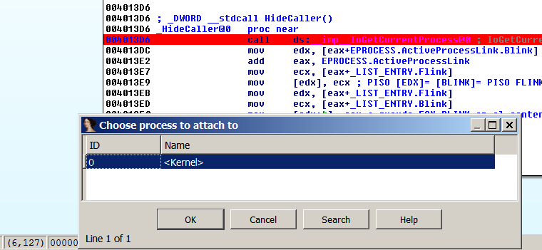
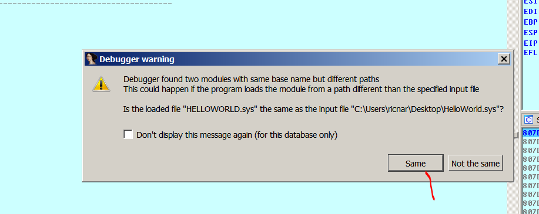
Cuando lo llamo desde el script de python user.py del ejercicio anterior va al Dispatch y llega al llamado de HideCaller.
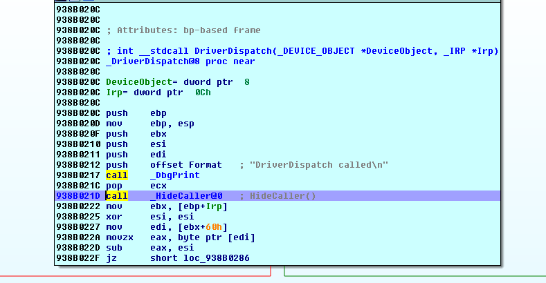
Al pasarla api en EAX queda la dirección del EPROCESS en mi caso 844C1D40
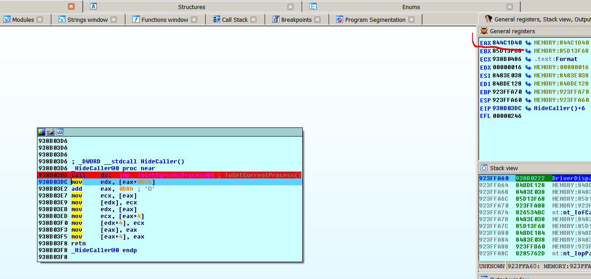
Verifiquemos con el Windbg en la barra del plugin.
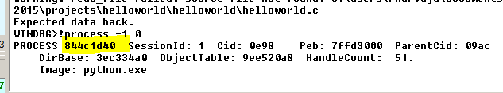
En este caso el proceso que llamo al Driver es el python.exe y ahi se ve el EPROCESS 0x844c1d40.
Veamos la estructura ActiveProcessLinks
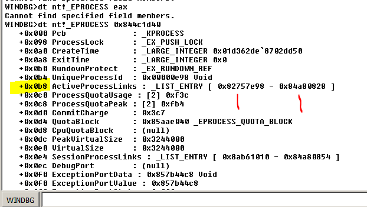
Allí vemos en la dirección de memoria EPROCESS + 0xb8 o sea 0x844c1df8
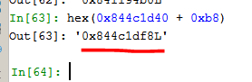
Su contenido es el FLINK = 0x82757e98
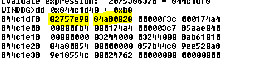
Y el siguiente dword a continuación es el BLINK = 0x84a80828
Ambos son el FLINK y BLINK de mi proceso.
FLINK = 82757de0 y BLINK = 0x84a80828
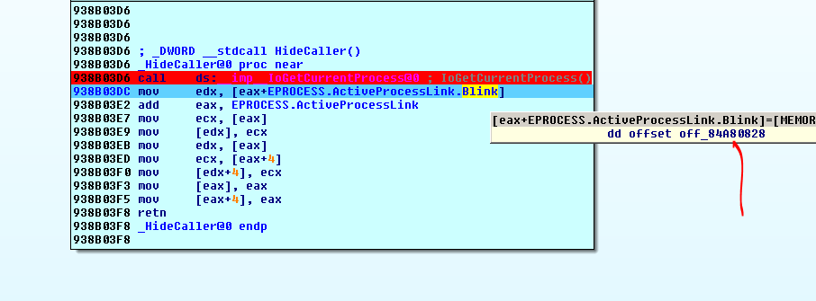
Al tracear y apretar T veo que lee mi BLINK y lo pasa a EDX
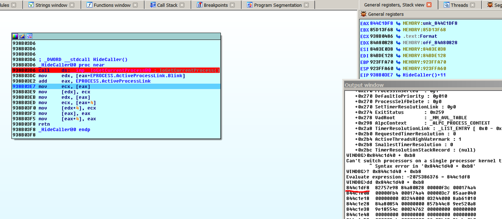
En EAX queda la dirección de la estructura ActiveProcessLink, su contenido es FLINK lo mueve a ECX.
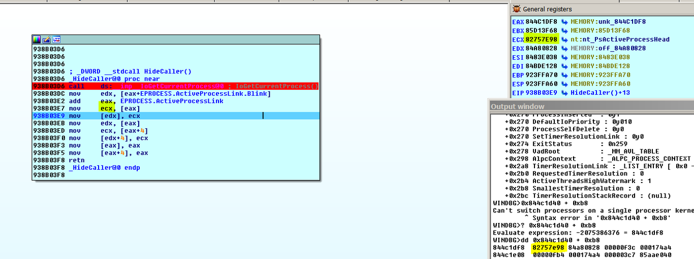
Luego va a copiar mi FLINK en el contenido de EDX que era mi BLINK el cual apuntara al ActiveProcessLink del proceso anterior.
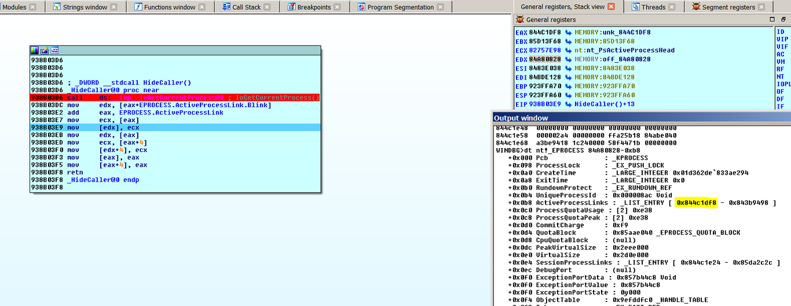
Va a pisar ese el FLINK del proceso anterior con mi FLINK.
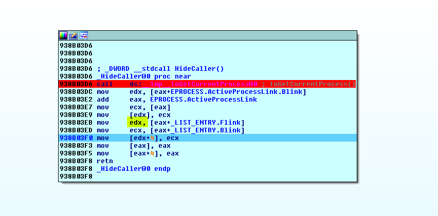
Luego levanta mi FLINK el cual por supuesto apunta al ActiveProcessLink del siguiente proceso y le suma 4 y halla el contenido, veamos el siguiente proceso.
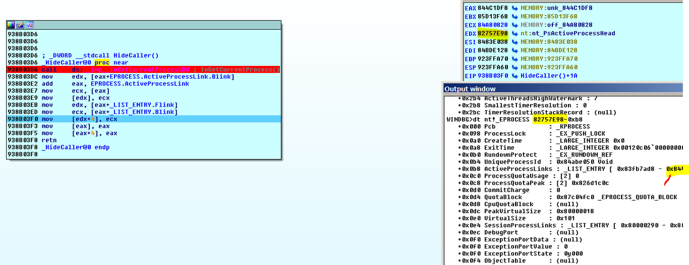
Pisara el BLINK del siguiente proceso con mi BLINK.
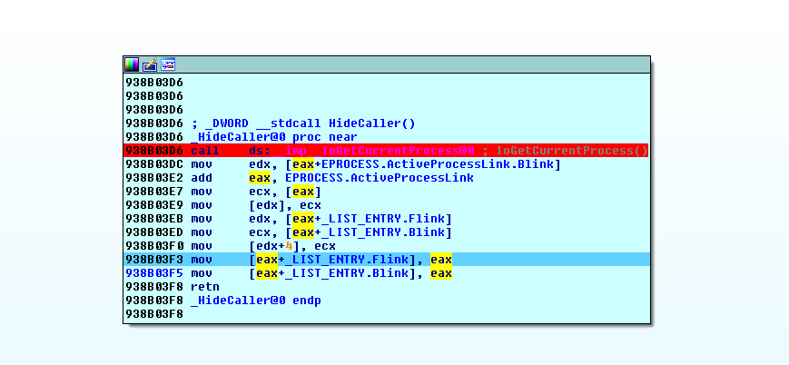
Luego finaliza pisando mi FLINK Y BLINK de mi proceso con la dirección de la estructura ActiveProcessLink, veamos como lista los procesos.
Vemos mi propio proceso tanto FLINK Y BLINK apuntan a la misma dirección de la estructura ActiveProcessLink.
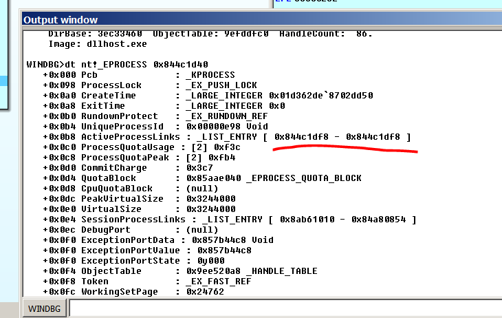
Al hacer !process 0 0 lo mismo en la barra de tareas vemos que el proceso python desapareció de la lista a pesar de que esta corriendo y eso es porque al ir recorriendo la lista y llegar al proceso justo anterior el FLINK del mismo ya no apunta a mi proceso python.exe sino al siguiente, lo saltea, lo mismo que el BLINK del siguiente no apunta mas al proceso python.exe sino al anterior, por eso es como si no existiera mas.
Ahora lo tiro de nuevo los valores cambiaran.
PROCESS 844b0d00 SessionId: 1 Cid: 09ac Peb: 7ffd4000 ParentCid: 05f0
DirBase: 3ec33540 ObjectTable: 92850c90 HandleCount: 93.
Image: cmd.exe
PROCESS 85da2b48 SessionId: 1 Cid: 0ae8 Peb: 7ffdb000 ParentCid: 01a4
DirBase: 3ec33560 ObjectTable: 9e02eb90 HandleCount: 51.
Image: conhost.exe
PROCESS 84a76030 SessionId: 0 Cid: 0d88 Peb: 7ffdc000 ParentCid: 020c
DirBase: 3ec33580 ObjectTable: 9fe4a3d8 HandleCount: 230.
Image: taskhost.exe
PROCESS 84bfad40 SessionId: 1 Cid: 0e24 Peb: 7ffd7000 ParentCid: 05f0
DirBase: 3ec33460 ObjectTable: 9e37c198 HandleCount: 119.
Image: taskmgr.exe
PROCESS 844c1d40 SessionId: 1 Cid: 0dec Peb: 7ffd9000 ParentCid: 09ac
DirBase: 3ec334a0 ObjectTable: 9a2ab3c0 HandleCount: 51.
Image: python.exe
WINDBG>dt nt!_EPROCESS 844c1d40
+0x000 Pcb : _KPROCESS
+0x098 ProcessLock : _EX_PUSH_LOCK
+0x0a0 CreateTime : _LARGE_INTEGER 0x01d362e6`34e8bf28
+0x0a8 ExitTime : _LARGE_INTEGER 0x0
+0x0b0 RundownProtect : _EX_RUNDOWN_REF
+0x0b4 UniqueProcessId : 0x00000dec Void
+0x0b8 ActiveProcessLinks : _LIST_ENTRY [ 0x82757e98 - 0x84bfadf8 ]
Despues de correr el driver y que pase por el dispatcher y la función HideCaller.
PROCESS 844b0d00 SessionId: 1 Cid: 09ac Peb: 7ffd4000 ParentCid: 05f0
DirBase: 3ec33540 ObjectTable: 92850c90 HandleCount: 93.
Image: cmd.exe
PROCESS 85da2b48 SessionId: 1 Cid: 0ae8 Peb: 7ffdb000 ParentCid: 01a4
DirBase: 3ec33560 ObjectTable: 9e02eb90 HandleCount: 51.
Image: conhost.exe
PROCESS 84a76030 SessionId: 0 Cid: 0d88 Peb: 7ffdc000 ParentCid: 020c
DirBase: 3ec33580 ObjectTable: 9fe4a3d8 HandleCount: 230.
Image: taskhost.exe
PROCESS 84bfad40 SessionId: 1 Cid: 0e24 Peb: 7ffd7000 ParentCid: 05f0
DirBase: 3ec33460 ObjectTable: 9e37c198 HandleCount: 121.
Image: taskmgr.exe
La lista termina alli, no existe mas en la misma el proceso python.exe.
No es muy difícil, no hay que hacerse lío con la lista enlazada de ActiveProcessLink, una vez que se entiende eso es fácil.
Hasta la próxima parte 56
Ricardo Narvaja